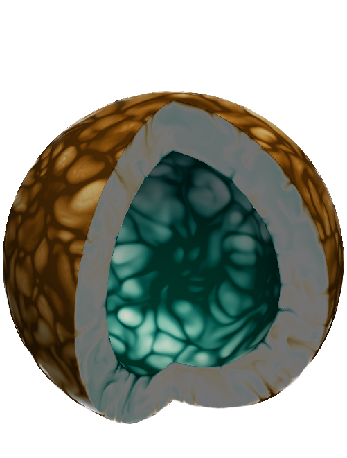
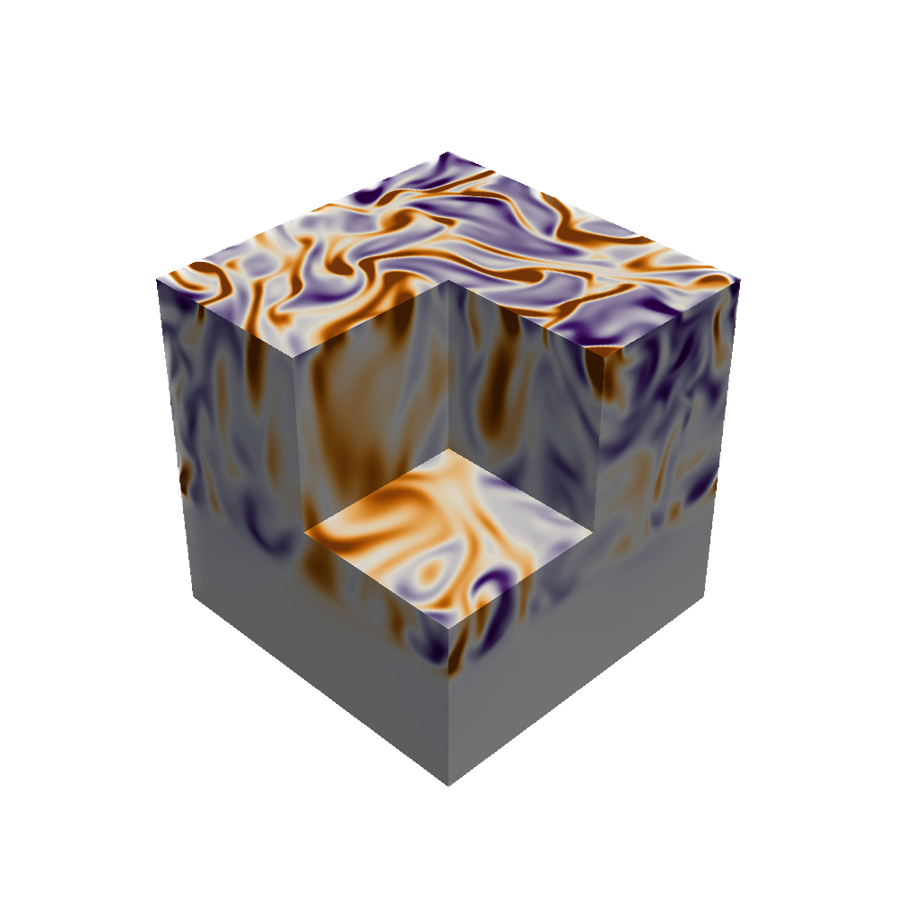

Rafael Fuentes
Postdoctoral Fellow
Department of Applied Mathematics at the University of Colorado, Boulder
Welcome! I am a Postoctoral Researcher at CU Boulder. Currently, I'm part of the Boulder Stellar Convection Team lead by Bradley Hindman and Nick Featherstone. I use numerical simulations and analytical calculations to determine how convection in planets and stars provides turbulent transport and compositional mixing. You can find my thesis in 400 words by clicking here.
Before starting a Postdoc at CU Boulder, I was an undergraduate at the Pontificia Universidad Católica de Chile, and received my PhD from McGill University in October 2022 under the supervision of Andrew Cumming.
In my free time, I take advantage of the many mountains around Boulder Colorado, for daily hikes and runs.
When a multicomponent plasma freezes, the composition of the solid is typically different from the composition of the liquid. If the solid preferentially retains heavy elements, the liquid left behind is lighter and buoyant, driving convection. Redistribution of elements in white dwarf interiors is important because: (1) the gravitational energy released can prolong white dwarf cooling, and (2 it could lead to a magnetic dynamo in crystallizing white dwarfs.

Giant planets like Jupiter, which undergo strong convection in their outer layers, might develop composition gradients from their formation history. During the early evolution of a giant planet, a convection zone propagates inwards as the planet cools down. How quickly does the convection zone move inward? What is the mixing mechanism behind this process?

Rotation-powered pulsars and magnetars are believed to be highly magnetized neutron stars. The rotation of these objects is extremely stable (several of them can rival the stability of atomic clocks) and shows a regular spin-down trend. However, some pulsars and magnetars exhibit sudden increases in their rotation frequency called "glitches", that occur on timescales as short as a minute. The physics behind glitches are not completely understood, but these phenomena are believed to be caused due to a rapid exchange of angular momentum between a superfluid of neutrons inside the star, and the rest of the components of the star. The observations of glitches are important since through them is possible to study indirectly the structural properties of neutron stars. How the glitch activity (spin-up rate due to glitches) depends on the properties of the star (spin frequency, spin‐down rate, and various combinations of these, such as energy loss rate, magnetic field, and spin‐down age)? Is the relation between glitch sizes and waiting times between glitches random or follow some regularities? Below you can find possible answers to those questions.